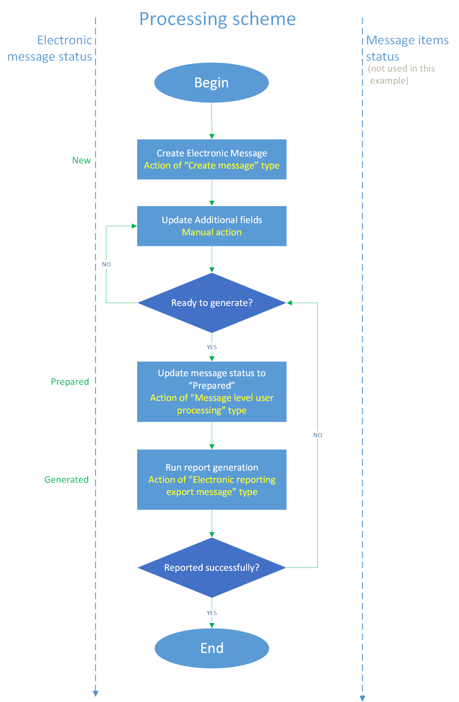
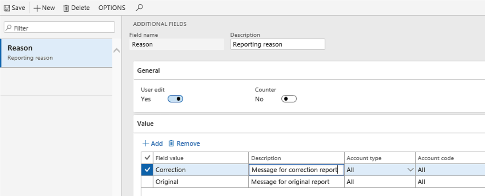
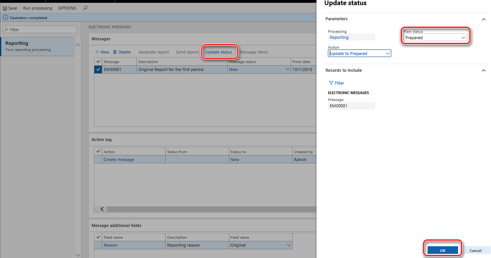

Elektronische Nachrichten
Important
Dynamics 365 for Finance and Operations hat sich zu speziell entwickelten Anwendungen entwickelt, mit denen Sie bestimmte Geschäftsfunktionen verwalten können. Weitere Informationen zu diesen Änderungen finden Sie im Dynamics 365-Lizenzierungshandbuch.
Dieses Thema enthält eine Übersicht und Einrichtungsinformationen für elektronisches Messaging.
Vor kurzem haben die Behörden und die gesetzgebenden Instanzen aus verschiedenen Ländern und Regionen der Welt Meldeanforderungen für Unternehmen implementiert, die in diesen Ländern oder Regionen registriert sind. Anhand dieser Anforderungen sollen Daten von diesen Unternehmen in elektronischem Format bezogen werden, direkt aus den Systemen, in denen sie kalkuliert, gespeichert und verarbeitet werden.
Die Funktionalität zum elektronischen Messaging in Finance unterstützt verschiedene Prozesse zum elektronischen dialogfähigen Betrieb zwischen Finance und den Systemen, die Regierungen und gesetzgebende Instanzen zur Berichterstellung, Übermittlung und dem Empfang von amtlichen Informationen anbieten.
Die Funktion zum elektronischen Messaging ist im Modul Elektronische Berichterstellung (EB) integriert. Daher können Sie EB-Formate für elektronische Nachrichten einrichten. Weitere Informationen finden Sie unter Elektronische Berichterstellung (EB).
Elektronisches Messaging basiert auf folgenden Entitäten:
- Elektronische Nachricht – Ein Bericht oder eine Meldung, die intern gemeldet und/oder gesendet werden sollte Ein Beispiel ist ein Bericht, der an eine Steuerbehörde gesendet wird.
- Elektronische Nachrichtenelemente – Datensätze, die in die Nachricht eingeschlossen werden sollen, die gemeldet wird.
- Verarbeiten der elektronischen Nachricht – Eine Kette von Aktivitäten, die ausgeführt werden sollte, um die erforderlichen Daten zu sammeln, Berichte zu generieren, Daten in Microsoft Azure Blob Storage zu speichern, Berichte außerhalb des Systems zu übermitteln, Antworten von außerhalb des Systems zu empfangen und die Datenbank anhand empfangener Informationen zu aktualisieren. Die Aktivitäten in der Kette können entweder verknüpft oder unverknüpft sein
Die folgende Abbildung zeigt den Datenfluss für elektronisches Messaging an.

Die Funktion der elektronischen Messaging unterstützt die folgenden Szenarien:
- Manuelles Erstellen von Nachrichten und Generieren von Berichten, die auf zugeordneten EB-Formaten verschiedener Typen für das Exportieren basieren: Microsoft Excel, XML, JavaScript Object Notation (JSON), PDF, Text und Microsoft Word.
- Automatisches Erstellen und Verarbeiten von Nachrichten, die auf Informationen basieren, die von einer Behörde über ein zugeordnetes EB-Format für den Import angefordert und empfangen wurden.
- Sammeln und Verarbeiten von Informationen aus einer Datenquelle als Nachrichtenelemente. Die Datenquelle für eine Finance-Tabelle.
- Zusätzliche Informationen speichern und verschiedene Werte auswerten, indem speziell definierte ausführbare Klassen in Relation zu Nachrichten und Nachrichtenelementen aufgerufen werden.
- Aggregieren von Informationen, die in Nachrichtenelementen gesammelt werden, Aufteilung dieser Informationen nach Nachricht und Generieren von Berichten, die in zugeordneten Export-EB-Formaten sind.
- Übermitteln der Berichte, die für einen Webdienst mithilfe von Sicherheitsinformationen generiert werden, die in Azure Key Vault gespeichert sind.
- Empfangen einer Antwort über einen Webdienst, Interpretieren der Antwort und Aktualisieren der Daten in Finance je nach Bedarf.
- Speichern und Überprüfen aller Berichte, die generiert werden.
- Speichern und Überprüfen aller Protokollinformationen, die Aktivitäten zugeordnet sind, die für die eine Nachricht oder ein Nachrichtenelement ausgeführt werden.
- Steuern der Verarbeitung durch verschiedene Nachrichtenstatus und Nachrichtenelementstatus.
Einrichten des elektronischen Messaging
Mithilfe des elektronischen Messaging können Sie verschiedene elektronische Berichterstellungsprozesse für verschiedene Dokumenttypen verwalten. In einigen komplexen Szenarien werden elektronische Nachrichten so eingerichtet, dass sie eine Kombination vieler Nachrichtenstatus, Nachrichtenelementstatus, Aktivitäten, zusätzlicher Felder und ausführbarer Klassen sind. Für diese Szenarien sind Pakete von Datenentitäten für den Import verfügbar. Wenn Sie diese Datenentitätspakete verwenden, sollten Sie sie zu einer juristischen Person importieren, indem Sie das Datenverwaltungstool verwenden. Weitere Informationen dazu, wie das Datenverwaltungstool verwendet wird, finden Sie unter Datenverwaltung.
Wenn Sie kein Datenentitätspaket importieren, kann die Funktionalität für elektronische Nachrichten manuell eingerichtet werden. In diesem Fall müssen Sie die folgenden Elemente einrichten:
- Nummernkreise
- Nachrichtenelementtypen und -status
- Nachrichtenstatus
- Zusätzliche Felder
- Ausführbare Klasseneinstellungen
- Datensatzauffüllungsaktivitäten
- Webanwendungen
- Webdiensteinstellungen
- Verarbeitungsaktivitäten für Nachrichten
- Verarbeitung der elektronischen Nachricht
Die folgenden Abschnitte enthalten mehr Informationen zu jedes dieser Elemente.
Nummernkreise
Richten Sie Nummernkreise sowohl für Nachrichten als auch Nachrichtenelemente ein. Die Nummernkreise werden verwendet, um automatisch die Nachrichten und die Nachrichtenelemente zu zählen. Die Nummern, die zugeordnet werden, werden als eindeutige Bezeichner für die Nachrichten und die Nachrichtenelemente im System verwendet. Sie können Nummernkreise für elektronisches Messaging auf der Seite Hauptbuchparameter (Hauptbuch > Sachkonto-Einrichtung > Hauptbuchparameter) einrichten.
Nachrichtenelementtypen und -status
Nachrichtenelementtypen identifizieren die Datensatztypen, die in den elektronischen Nachrichten verwendet werden. Sie können auf der Seite Nachrichtenelementtypen (Steuer > Einrichtung > Elektronische Nachrichten > Nachrichtenelementtypen) Nachrichtenelementtypen einrichten.
Nachrichtenelementstatus identifizieren die Status, die für Nachrichtenelemente in der Verarbeitung gelten, die Sie gerade einrichten. Sie können auf der Seite Nachrichtenelementstatus (Steuer > Einrichtung > Elektronische Nachrichten > Nachrichtenelementstatus) Nachrichtenelementtypen einrichten.
Der Parameter Löschen zulassen eines Nachrichtenelementstatus definiert, ob Benutzer Nachrichtenelemente löschen können, die diesen Status auf der Seite Elektronische Nachrichten oder der Seite Elektronische Nachrichtenelemente haben.
Nachrichtenstatus
Richten Sie die Nachrichtenstatus ein, die bei der Nachrichtenverarbeitung verfügbar sein sollen. Sie können auf der Seite Nachrichtenstatus (Steuer > Einrichtung > Elektronische Nachrichten > Nachrichtenstatus) Nachrichtenelementstatus einrichten.
In der folgenden Tabelle werden die Felder auf der Seite Nachrichtenstatus beschrieben.
| Feldname | Beschreibung |
|---|---|
| Nachrichtenstatus | Geben Sie einen eindeutigen Namen für den Nachrichtenstatus ein. Nachrichtenstatus werden verwendet, um den Status einer elektronischen Nachricht in jedem Moment zu kennzeichnen. Der Name, den Sie eingeben, wird auf der Seite Elektronische Nachrichten und in einem Protokoll angezeigt, das elektronischen Nachrichten zugeordnet ist. |
| Beschreibung | Geben Sie eine Beschreibung des Nachrichtenstatus ein. |
| Antworttyp | Wählen Sie den Typ der Antwort für den Nachrichtenstatus aus. Einige Aktivitäten in einer Verarbeitung können mehr als einen Antworttyp erzeugen. Aktionen des Typs Webdienst können beispielsweise Antworten entweder des Typs Erfolgreich ausgeführt oder des Typs Technischer Fehler erzeugen, je nach dem Ergebnis der Ausführung. In diesem Fall müssen Sie Nachrichtenstatus für beide Antworttypen definieren. Weitere Informationen zu Aktivitätstypen und deren Antworttypen, die sich auf sie beziehen, finden Sie unter Aktivitätstypen bei der Nachrichtenverarbeitung. |
| Nachrichtenelementstatus | Manchmal muss sich der Status einer elektronischen Nachricht auf den Status zugehöriger Nachrichtenelemente auswirken. Wählen Sie einen Nachrichtenelementstatus in diesem Feld aus, um ihn dem Nachrichtenstatus zuzuordnen. |
| Löschen zulassen | Aktivieren Sie dieses Kontrollkästchen, wenn Benutzer in der Lage sein sollen, elektronische Nachrichten zu löschen, die diesen Status auf der Seite Elektronische Nachrichten haben. |
Zusätzliche Felder
Die Funktion für elektronische Nachrichten ermöglicht es Ihnen, Datensätze aus einer Transaktionstabelle auszufüllen. Auf diese Weise können Sie die Datensätze für die Berichterstellung vorbereiten und diese anschließend melden. Transaktionstabellen enthalten manchmal jedoch nicht genügend Informationen, um die Datensätze in eine Weise auszufüllen, die die Berichtsanforderungen erfüllt. Um alle Informationen einzugeben, die für einen Datensatz gemeldet werden müssen, können Sie zusätzliche Felder einrichten. Zusätzliche Felder können sowohl Nachrichten als auch Nachrichtenelementen zugeordnet werden. Sie können zusätzliche Felder auf der Seite Zusätzliche Felder (Steuer > Einrichtung > Elektronische Nachrichten > Zusätzliche Felder) einrichten.
In der folgenden Tabelle werden die allgemeinen Felder auf der Seite Zusätzliche Felder beschrieben.
| Feld | Beschreibung |
|---|---|
| Feldname | Geben Sie den Namen eines zusätzlichen Attributs von Nachrichtenelementen ein, die dem Prozess zugeordnet sind. Dieser Name wird auf der Benutzeroberfläche (UI) angezeigt, wenn sie mit dem Prozess arbeiten. Er kann auch in EB-Konfigurationen verwendet werden, die dem Prozess zugeordnet sind. |
| Beschreibung | Geben Sie eine Beschreibung für das zusätzliche Feld ein. |
| Benutzerbearbeitung | Legen Sie diese Option auf Ja fest, wenn Benutzer dazu in der Lage sein sollen, den Wert des zusätzlichen Felds aus der Benutzeroberfläche zu ändern. |
| Zähler | Legen Sie diese Option auf Ja fest, wenn das zusätzliche Feld einen Nummernkreis in einer elektronischen Nachricht enthalten soll. Wert des zusätzlichen Felds wird automatisch ausgefüllt, wenn eine Aktivität des Elektronischer Berichtexport ausgeführt wird. |
| Ausgeblendet | Legen Sie diese Option auf Ja fest, wenn das zusätzliche Feld in der Benutzeroberfläche ausgeblendet werden soll. |
Jedes zusätzliche Feld kann über verschiedene Werte zur Bearbeitung verfügen. Sie definieren diese Werte im Inforegister Werte. In der folgenden Tabelle werden die Felder näher erläutert.
| Feld | Beschreibung |
|---|---|
| Feldwert | Geben Sie den Feldwert zur Verwendung für eine Nachricht oder ein Nachrichtenelement während der Berichterstellung ein. |
| Beschreibung | Geben Sie eine Beschreibung des Feldwerts ein. |
| Kontenart | Einige Feldwerte sind möglicherweise auf bestimmte Kontotypen beschränkt. Wählen Sie einen der folgenden Wert aus: Alle, Kunde oder Lieferant. |
| Kontocode | Wenn Sie Kunde oder Lieferant im Feld Kontotyp ausgewählt haben, können Sie die Benutzung des Feldwerts weiter auf eine bestimmte Gruppe oder Tabelle einschränken. |
| Konto-/Gruppennummer | Wenn Sie Kunde oder Lieferant im Feld Kontotyp ausgewählt haben und wenn Sie eine Gruppe oder Tabelle im Feld Kontocode eingegeben haben, können Sie eine bestimmte Gruppe oder einen Counteragent in diesem Feld eingeben. |
| Gültig | Geben Sie das Datum an, an dem die Berücksichtigung des Werts beginnen soll. |
| Ablauf | Geben Sie das Datum an, an dem die Berücksichtigung des Werts beendet werden soll. |
Standardmäßig wirken sich Kombinationen von Kriterien, die von den Feldern Konto-/Gruppennummer, Kontocode, Gültig und Ablauf definiert werden, nicht auf die Auswahl von Werten für zusätzliche Felder aus. Allerdings können diese Kombinationen in einer ausführbaren Klasse verwendet werden, um eine bestimmte Logik zu implementieren, die Werte für zusätzliche Felder berechnet.
Ausführbare Klasseneinstellungen
Eine ausführbare Klasse ist eine X++-Methode oder -Klasse, die die elektronische Nachrichtenverarbeitung in Bezug auf eine Aktivität aufrufen kann, wenn irgendeine Auswertung für den Prozess erforderlich ist.
Sie können eine ausführbare Klasse manuell auf der Seite Ausführbare Klasseneinstellungen (Steuer > Einrichtung > Elektronische Nachrichten > Ausführbare Klasseneinstellungen) einrichten. Erstellen Sie eine Position und legen Sie die folgenden Felder fest.
| Feld | Beschreibung |
|---|---|
| Ausführbare Klasse | Geben Sie den Namen ein, der bei der Einrichtung einer Nachrichtenverarbeitungsaktivität verwendet wird, in Bezug auf den diese Klasse aufgerufen wird. |
| Beschreibung | Geben Sie eine Beschreibung der ausführbaren Klasse ein. |
| Ausführbarer Klassenname | Wählen Sie eine ausführbare X++-Klasse aus. |
| Ausführungsebene | Dieses Feld wird automatisch festgelegt, da der Wert für die ausgewählte ausführbare Klasse vordefiniert werden sollte. Dieses Feld begrenzt die Ebene, auf der die Auswertung ausgeführt wird. |
| Klassenbeschreibung | Dieses Feld wird automatisch festgelegt, da der Wert für die ausgewählte ausführbare Klasse vordefiniert werden sollte. |
Einige ausführbare Klassen besitzen möglicherweise obligatorische Parameter, die definiert werden müssen, bevor die ausführbare Klasse zum ersten Mal ausgeführt wird. Um diese Parameter zu definieren, wählen Sie Parameter im Aktivitätsbereich aus, legen Sie die Felder im Dialogfeld fest, das angezeigt wird, und wählen Sie dann OK aus. Es ist wichtig, dass Sie OK auswählen. Andernfalls werden die Parameter nicht in der Datenbank gespeichert, und die ausführbare Klasse wird nicht ordnungsgemäß aufgerufen.
Datensatzauffüllungsaktivitäten
Sie verwenden Aktivitäten zum Auffüllen von Datensätzen, um Aktivitäten einzurichten, durch die Datensätze zur Tabelle „Nachrichtenelemente” hinzugefügt werden, sodass sie einer elektronischen Nachricht hinzugefügt werden können. Wenn beispielsweise Ihre elektronische Nachricht Debitorenrechnungen melden muss, müssen Sie eine Aktivität zum Auffüllen von Datensätzen einrichten, die mit dem Feld Datenquelle in der Tabelle „Debitorenrechnungserfassung” verknüpft ist. Sie können Aktivitäten zum Auffüllen von Datensätzen auf der Seite Aktivität zum Auffüllen von Datensätzen einrichten (Steuer > Einrichtung > Elektronische Nachrichten > Datensatzaktivitäten auffüllen) einrichten. Erstellen Sie einen neuen Datensatz für jede Aktivität, durch die Datensätze der Tabelle hinzugefügt werden sollen, und legen Sie die folgenden Felder fest.
| Feld | Beschreibung |
|---|---|
| Name | Geben Sie einen Namen für die Aktivität ein, durch die Datensätze in Ihrem Prozess ausgefüllt werden. |
| Beschreibung | Geben Sie eine Beschreibung der Aktivität zum Auffüllen von Datensätzen ein. |
Fügen Sie im Inforegister Datenquelleneinrichtung eine Position für jede Datenquelle hinzu, die für den Prozess verwendet wird, und legen Sie die folgenden Felder fest.
| Feld | Beschreibung |
|---|---|
| Name | Geben Sie einen Namen für die Datenquelle ein. |
| Nachrichtenelementtyp | Wählen Sie den Typ des Nachrichtenelements aus, der verwendet werden soll, wenn Datensätze für die Datenquelle erstellt werden. |
| Kontenart | Wählen Sie den Kontotyp aus, der den Datensätzen aus der Datenquelle zugeordnet werden soll. |
| Mastertabellenname | Wählen Sie die Tabelle aus, die eine Datenquelle sein soll. |
| Feld „Dokumentnummer” | Wählen Sie das Feld aus, aus dem die Belegnummer in der ausgewählten Tabelle entnommen werden soll. |
| Feld „Dokumentdatum” | Wählen Sie das Feld aus, aus dem das Belegdatum in der ausgewählten Tabelle entnommen werden soll. |
| Feld „Dokumentenkonto” | Wählen Sie das Feld aus, aus dem das Belegkonto in der ausgewählten Tabelle entnommen werden soll. |
| Benutzerabfrage | Wenn dieses Kontrollkästchen aktiviert ist, können Sie eine Abfrage einrichten, indem Sie Abfrage bearbeiten über dem Raster auswählen. Andernfalls werden alle Datensätze aus der ausgewählten Datenquelle ausgefüllt. |
Webanwendungen
Sie verwenden Webanwendungseinstellungen, um eine Webanwendung einzurichten, damit sie Open Authorization (OAuth) 2.0 unterstützt. OAuth ist ein offener Standard, mit dem Benutzer „sicheren delegierten Zugriff” auf die Anwendung in ihrem Auftrag gewähren können, ohne ihre Anmeldeinformationen für den Zugriff zu teilen. Sie können auch den Autorisierungsprozess durchführen, indem Sie einen Autorisierungscode und ein Zugriffstoken abrufen. Sie können Webanwendungseinsteinstellungen auf der Seite Webanwendungen (Steuer > Einrichtung > Elektronische Nachrichten > Webanwendungen) einrichten.
In der folgenden Tabelle werden die Felder auf der Seite Webanwendungen beschrieben.
| Feld | Beschreibung |
|---|---|
| Anwendungsname | Geben Sie einen Namen für den Webanwendung ein. |
| Beschreibung | Geben Sie eine Beschreibung des Webanwendung ein. |
| Basis-URL | Geben Sie die Basis-Internetadresse der Webanwendung ein. |
| Autorisierungs-URL-Pfad | Geben Sie den Pfad ein, der verwendet wird, um die URL für die Autorisierung zu erstellen. |
| Token-URL-Pfad | Geben Sie den Pfad an, der verwendet wird, um die URL für den Token zu erstellen. |
| Umleitungs-URL | Umleitungs-URL eingeben. |
| Clientkennung | Geben Sie die Client-ID der Webanwendung ein. |
| Geheimer Clientschlüssel | Geben Sie den geheimen Clientschlüssel der Webanwendung ein. |
| Servertoken | Geben Sie das Server-Token der Webanwendung ein. |
| Autorisierungsformatzuordnung | Wählen Sie das EB-Format aus, das verwendet wird, um die Anforderung zur Autorisierung zu generieren. |
| Importtoken-Modellzuordnung | Wählen Sie die EB-Importmodellzuordnung aus, mit der der Zugriffstoken gespeichert wird. |
| Gewährter Bereich | Der Bereich, der für Anforderungen zur Bewerbung gewährt wird. Dieses Feld wird automatisch aktualisiert. |
| Zugriffstoken läuft ab in | Die verbleibende Zeit, bevor der Zugriffstoken abläuft. |
| Übernehmen | Geben Sie die Eigenschaft Annehmen der Webanforderung an. Geben Sie beispielsweise application/vnd.hmrc.1.0+json ein. |
| Inhaltstyp | Geben Sie den Inhaltstyp an. Geben Sie beispielsweise application/json ein. |
Darüber hinaus sind die folgenden Schaltflächen verfügbar im Aktivitätsbereich der Seite Webanwendungen, um den Autorisierungsprozess zu unterstützen:
- Autorisierungscode abrufen – Autorisierung der Webanwendung initialisieren.
- Zugriffstoken abrufen – Den Prozess des Abrufens eines Zugriffstokens initialisieren.
- Zugriffstoken aktualisieren – Einen Zugriffstoken aktualisieren.
Wenn ein Zugriffstoken für eine Webanwendung, die in der Datenbank des Systems in verschlüsseltem Format gespeichert ist, kann es für Anforderungen an einen Webdienst verwendet werden. Aus Sicherheitsgründen muss der Zugriff auf das Zugriffstoken auf Sicherheitsrollen begrenzt werden, denen gestattet sein muss, derartige Anforderungen zu erfüllen. Wenn Benutzer außerhalb der Sicherheitsgruppe versuchen, eine Anforderung zu erteilen, erhalten sie eine Fehlermeldung, die aussagt, dass es ihnen nicht gestattet ist, über die ausgewählte Webanwendung zu interagieren. Um die Sicherheitsrollen einzurichten, die Zugriff auf das Zugriffstoken haben müssen, verwenden Sie das Inforegister Sicherheitsrollen auf der Seite Webanwendungen. Wenn Sicherheitsrollen für eine Webanwendung nicht definiert sind, kann nur ein Systemadministrator über diese Webanwendung interagieren.
Webdiensteinstellungen
Sie verwenden Webdiensteinstellungen, um direkte Datenübermittlung zu einem Webdienst einzurichten. Sie können Webdiensteinstellungen auf der Seite Webdiensteinstellungen (Steuer > Einrichtung > Elektronische Nachrichten > Webdiensteinstellungen) einrichten.
In der folgenden Tabelle werden die Felder auf der Seite Webdiensteinstellungen beschrieben.
| Feld | Beschreibung |
|---|---|
| Webdienst | Geben Sie einen Namen für den Webdienst ein. |
| Beschreibung | Geben Sie eine Beschreibung des Webdiensts ein. |
| Internetadresse | Geben Sie die Internetadresse des Webdiensts ein. Wenn eine Webanwendung für den Webdienst angegeben ist und wenn die Internetadresse des Webdiensts mit der Internetadresse identisch sein soll, die für diese Webanwendung definiert ist, wählen Sie Basis-URL kopieren aus, um die Basis-URL der Webanwendung in dieses Feld zu kopieren. |
| Bescheinigung | Wählen Sie ein Key Vault-Zertifikat aus, das zuvor eingerichtet wurde. |
| Webanwendung | Wählen Sie ein Key Vault-Zertifikat aus, das zuvor eingerichtet wurde. |
| Der Antworttyp – XML | Legen Sie diese Option auf Ja fest, wenn der Antworttyp XML ist. |
| Anforderungsmethode | Geben Sie die Methode der Anforderung an. HTTP definiert eine Gruppe von Anforderungsmethoden, die die Aktivität angeben, die für eine bestimmte Ressource ausgeführt werden soll. Die Anforderungsmethode kann GET, POST oder eine andere HTTP-Methode sein. |
| Anforderungskopfzeile | Geben Sie Anforderungskopfzeilen an. Eine Anforderungskopfzeile ist eine HTTP-Kopfzeile, die in einer HTTP-Anforderung verwendet werden kann und die nicht dem Inhalt der Nachricht zugeordnet ist. |
| Übernehmen | Geben Sie die Eigenschaft Annehmen der Webanforderung an. |
| Codierung akzeptieren | Geben Sie den Wert Accept-Encoding an. Die HTTP-Kopfzeile der Accept-Codierungsanforderung kündigt die Inhaltscodierung an, die der Client verstehen kann. Diese Inhaltscodierung ist normalerweise ein Komprimierungsalgorithmus. |
| Inhaltstyp | Geben Sie den Inhaltstyp an. Die HTTP-Kopfzeile der Entität „Inhaltstyp” gibt den Medientyp der Ressource an. |
| Code für erfolgreiche Antwort | Geben Sie den HTTP-Statuscode an, der angibt, dass die Anforderung erfolgreich war. |
| Anforderungskopfzeilen-Formatzuordnung | Wählen Sie das EB-Format aus, das verwendet wird, um Webanforderungskopfzeilen zu generieren. |
Verarbeitungsaktivitäten für Nachrichten
Mithilfe von Nachrichtenverarbeitungsaktivitäten erstellen Sie Aktivitäten für Ihre Prozesse und richten deren Parameter ein. Sie können Nachrichtenverarbeitungsaktivitäten auf der Seite Nachrichtenverarbeitungsaktivitäten (Steuer > Einrichtung > Elektronische Nachrichten > Nachrichtenverarbeitungsaktivitäten) einrichten.
In den folgenden Tabellen werden die Felder auf der Seite Nachrichtenverarbeitungsaktivitäten beschrieben.
Allgemeines Inforegister
| Feld | Beschreibung |
|---|---|
| Vorgangstyp | Wählen Sie den Typ der Aktivität aus. Informationen zu den verfügbaren Optionen finden Sie im Abschnitt Nachrichtenverarbeitungsaktivitäts-Typen. |
| Formularzuordnung | Wählen Sie das EB-Format aus, das für die Aktivität aufgerufen werden soll. Dieses Feld ist nur für Aktivitäten der Typen Elektronischer Berichterstellungsexport, Elektronischer Berichterstellungsimport und Elektronische Berichterstellungsexportnachricht verfügbar. |
| Formatzuordnung für URL-Pfad | Wählen Sie das EB-Format aus, das für die Aktivität aufgerufen werden soll. Dieses Feld ist nur für Aktivitäten vom Typ Webdienst verfügbar. Es wird verwendet, um den Pfad der URL-Adresse zu erstellen, der der Basisinternetadresse hinzugefügt wird, die für den ausgewählten Webserver angegeben wird. |
| Nachrichtenelementtyp | Wählen Sie den Typ von Datensätzen aus, für den die Aktivität ausgewertet werden soll. Dieses Feld ist für Aktivitäten der Typen Nachrichtenelement-Ausführungsebene, Elektronischer Berichterstellungsexport, Elektronischer Berichterstellungsimport und Webdienst verfügbar sowie für einige andere Typen. Wenn Sie dieses Feld leer lassen, werden alle Nachrichtenelementtypen, die für die Nachrichtenverarbeitung definiert sind, ausgewertet. |
| Ausführbare Klasse | Wählen Sie die Einstellungen ausführbarer Klassen aus, die zuvor erstellt wurden. Dieses Feld ist nur für Aktivitäten der Typen Nachrichtenelement-Ausführungsebene und Nachrichtenelementausführungsebene verfügbar. |
| Datensatzauffüllungsaktivität | Wählen Sie eine Aktivität zum Auffüllen von Datensätzen aus, die zuvor eingerichtet wurde. Dieses Feld ist nur für Aktivitäten vom Typ Datensätze auffüllen verfügbar. |
| Webdienst | Wählen Sie einen Webdienst aus, der zuvor eingerichtet wurde. Dieses Feld ist nur für Aktivitäten vom Typ Webdienst verfügbar. |
| Dateiname | Geben Sie den Namen der Datei an, die das Ergebnis der Aktivität sein wird. Diese Datei kann die Antwort vom Webserver oder vom Bericht sein, der erzeugt wird. Dieses Feld ist nur für Aktivitäten der Typen Webdienst und Elektronische Berichterstellungsexportnachricht verfügbar. |
| Dialog anzeigen | Legen Sie diese Option auf Ja fest, wenn ein Dialogfeld Benutzern vor der Berichtserstellung angezeigt werden muss. Dieses Feld ist nur für Aktivitäten vom Typ Elektronische Berichterstellungsexportnachricht verfügbar. |
Nachrichtenverarbeitungsaktivitäts-Typen
Die folgenden Optionen sind im Feld Aktivitätstypen verfügbar:
- Nachricht erstellen – Verwenden Sie diesen Aktivitätstyp, damit Benutzer Nachrichten auf der Seite Elektronische Nachricht manuell erstellen können. Ein Anfangsstatus für eine Aktivität dieses Typs kann nicht eingerichtet werden.
- Datensätze auffüllen – Eine Aktivität des Typs Datensätze auffüllen muss zuvor eingerichtet werden. Ordnen Sie diesen Aktivitätstyp einer Aktivität zum Auffüllen von Datensätzen zu, damit diese Aktivität in die Verarbeitung einbezogen werden kann. Es wird angenommen, dass dieser Aktivitätstyp entweder für die erste Aktivität in der Nachrichtenverarbeitung verwendet wird (wenn keine elektronische Nachricht im Voraus erstellt wurde) oder für eine Aktivität, die Nachrichtenelemente einer Nachricht hinzufügt, die zuvor mithilfe einer Aktivität des Typs Nachricht erstellen erstellt wurde. Daher kann für Aktivitäten dieses Typs ein Ergebnisstatus nur für Nachrichtenelements eingerichtet werden. Ein Anfangsstatus kann nur für Nachrichten eingerichtet werden.
- Nachrichtenausführungsebene – Dieser Aktivitätstyp wird verwendet, um eine ausführbare Klasse einzurichten, die auf der Nachrichtenebene ausgewertet werden soll.
- Nachrichtenelement-Ausführungsebene – Dieser Aktivitätstyp wird verwendet, um eine ausführbare Klasse einzurichten, die auf der Nachrichtenelementebene ausgewertet werden soll.
- Elektronischer Berichterstellungsexport – Verwenden Sie diesen Aktivitätstyp für Aktivitäten, die einen Bericht generieren sollen, der auf einer Export-EB-Konfiguration auf der Nachrichtenelementebene basiert.
- Elektronische Berichterstellungsexport-Nachricht – Verwenden Sie diesen Aktivitätstyp für Aktivitäten, die einen Bericht generieren sollen, der auf einer Export-EB-Konfiguration auf der Nachrichtenebene basiert (beispielsweise wenn eine Nachricht keine Nachrichtenelemente hat).
- Elektronischer Berichterstellungsimport – Verwenden Sie diesen Aktivitätstyp für Aktivitäten, die einen Bericht generieren sollen, der auf einer Import-EB-Konfiguration basiert.
- Benutzerverarbeitung auf Nachrichtenebene – Verwenden Sie diesen Aktivitätstyp für Aktivitäten, bei denen von einigen manuellen Aktivitäten durch den Benutzer auf der Nachrichtenebene ausgegangen wird. Beispielsweise aktualisiert der Benutzer unter Umständen den Status von Nachrichten.
- Benutzerverarbeitung – Verwenden Sie diesen Aktivitätstyp für Aktivitäten, bei denen von einigen manuellen Aktivitäten durch den Benutzer auf der Nachrichtenelementebene ausgegangen wird. Beispielsweise aktualisiert der Benutzer unter Umständen den Status von Nachrichtenelementen.
- Webdienst – Verwenden Sie diesen Aktivitätstyp für Aktivitäten, durch die ein generierter Bericht zu einem Webdienst übertragen werden sollen. Dieser Aktivitätstyp wird nicht für die Berichterstellung für „Italienischer Einkauf” und „Verkaufsrechnungskommunikation” verwendet. Bei Aktivitäten vom Typ Webdienst umfasst die Seite Nachrichtenverarbeitungsaktivitäten ein Inforegister Sonstige Details, wo Sie einen Bestätigungstext angeben können. Dieser Bestätigungstext wird Benutzer angezeigt, bevor Anforderungen an den ausgewählten Webdienst behandelt werden.
- Überprüfung anfordern – Dieser Aktivitätstyp wird verwendet, um die Überprüfung von einem Server anzufordern.
Anfangsstatus-Inforegister
Note
Das Inforegister Anfangsstatus ist nicht für Aktivitäten mit dem Anfangsaktivitätstyp Nachricht erstellen verfügbar.
| Feld | Beschreibung |
|---|---|
| Nachrichtenelementstatus | Wählen Sie den Nachrichtenelementstatus aus, für den die ausgewählte Nachrichtenverarbeitungsaktivität ausgewertet werden soll. |
| Beschreibung | Eine Beschreibung des ausgewählten Nachrichtenelementstatus. |
Ergebnisstatus-Inforegister
| Feld | Beschreibung |
|---|---|
| Nachrichtenstatus | Wählen Sie die Nachrichtenstatus aus, für den die ausgewählte Nachrichtenverarbeitungsaktivität ausgewertet werden soll. Dieses Feld ist nur für Nachrichtenverarbeitungsaktivitäten verfügbar, die auf Nachrichtenebene ausgewertet werden. Beispielsweise ist es für Aktivitäten der Typen Elektronischer Berichterstellungsexport und Elektronischer Berichterstellungsimport verfügbar. Es ist jedoch nicht für Aktivitäten der Typen Benutzerverarbeitung und Nachrichtenelementausführungsebene verfügbar. |
| Beschreibung | Eine Beschreibung des ausgewählten Nachrichtenstatus. |
| Antworttyp | Der Antworttyp des ausgewählten Nachrichtenstatus. |
| Nachrichtenelementstatus | Wählen Sie die resultierenden Status aus, die verfügbar sein sollten, nachdem die ausgewählte Nachrichtenverarbeitungsaktivität ausgewertet ist. Dieses Feld ist nur für Nachrichtenverarbeitungsaktivitäten verfügbar, die auf Nachrichtenelementebene ausgewertet werden. Beispielsweise ist es für Aktivitäten der Typen Benutzerverarbeitung und Nachrichtenelement-Ausführungsebene verfügbar. Für Nachrichtenverarbeitungsaktivitäten, die auf Nachrichtenebene ausgewertet werden, zeigt dieses Feld den Nachrichtenelementstatus an, der für den ausgewählten Nachrichtenstatus eingerichtet wurde. |
In der folgenden Tabelle werden die Ergebnisstatus angezeigt, die für verschiedene Aktivitätstypen und Antworttypen eingerichtet werden müssen.
| Aktivitätstyp/Antworttyp der elektronischen Nachricht | Erfolgreich ausgeführt | Geschäftsfehler | Technischer Fehler | Von Benutzer definiert | Stornieren |
|---|---|---|---|---|---|
| Nachricht erstellen | X | ||||
| Elektronischer Berichtexport | X | ||||
| Elektronischer Berichtimport | |||||
| Webdienst | X | X | |||
| Benutzerverarbeitung | |||||
| Nachrichtenausführungsebene | |||||
| Datensätze auffüllen | |||||
| Nachrichtenelement-Ausführungsebene | |||||
| Überprüfung anfordern | X | X | X | ||
| Nachricht zum elektronischen Berichtexport | X | ||||
| Benutzerverarbeitung auf Nachrichtenebene |
Verarbeitung der elektronischen Nachricht
Elektronische Nachrichtenverarbeitung ist ein Grundprinzip der elektronischen Nachrichtenfunktion. Dadurch werden Aktivitäten aggregiert, die für die elektronische Nachricht ausgewertet sollen. Die Aktivitäten können über einen Anfangsstatus und einen Ergebnisstatus verknüpft werden. Alternativ können Aktivitäten des Typs Benutzerverarbeitung unabhängig gestartet werden. Auf der Seite Elektronische Nachrichtenverarbeitung (Steuer > Einrichtung > Elektronische Nachrichten > Elektronische Nachrichtenverarbeitung) können Sie auch zusätzliche Felder auswählen, die für die Verarbeitung auf entweder der Nachrichtenebene oder de Nachrichtenelementebene unterstützt werden sollen.
Mithilfe des Inforegisters Aktivität können Sie der Verarbeitung vordefinierte Aktivitäten hinzufügen. Sie können angeben, ob eine Aktivität gesondert ausgeführt werden muss oder ob sie durch die Verarbeitung gestartet werden kann. Um anzugeben, dass eine Aktivität bei der Verarbeitung nur von einem Benutzer initialisiert werden kann, legen Sie das Feld Getrennt ausführen für diese Aktivität auf Ja fest. Wenn eine Aktivität durch die Verarbeitung für Nachrichten oder Nachrichtenelemente gestartet werden sollte, die sich im Status befinden, der als Anfangsstatus für die Aktivität definiert ist, legen Sie das Feld Getrennt ausführen auf Nein fest. Aktivitäten des Typs Benutzeraktivität müssen immer separat ausgeführt werden.
Manchmal müssen mehrere Aktivitäten in einen Nummernkreis zusammengefasst werden, obwohl die erste Aktivität so eingerichtet ist, dass sie gesondert ausgeführt wird. Beispielsweise muss ein Benutzer eine Berichtserstellung initialisieren, aber unmittelbar nachdem der Bericht erstellt ist, muss er an einen Webdienst gesendet werden, und die Antwort vom Webdienst muss im System berücksichtigt werden. In diesem Fall können Sie eine untrennbare Sequenz für die Aktivitäten erstellen, die immer zusammen ausgeführt werden müssen. Wählen Sie im Inforegister Aktivität die Option Untrennbare Sequenzen über dem Raster aus, und erstellen Sie eine Sequenz. Wählen Sie dann für alle Aktivitäten, die zusammen ausgeführt werden müssen, die Sequenz im Feld Untrennbarer Sequenz aus. In diesem Fall kann das Feld Getrennt ausführen für die erste Aktivität in der Sequenz auf Ja festgelegt werden, für all anderen Aktivitäten aber auf Nein.
Mithilfe des Inforegisters Zusätzliche Felder des Nachrichtenelements können Sie vordefinierte zusätzliche Felder hinzufügen, die Nachrichtenelementen zugeordnet sind. Sie müssen zusätzliche Felder für jeden Typ von Nachrichtenelement hinzufügen, dem die Felder zugeordnet sind.
Mithilfe des Inforegisters Zusätzliche Felder des Nachrichtenelements können Sie vordefinierte zusätzliche Felder hinzufügen, die Nachrichten zugeordnet sind.
Mithile des Inforegisters Sicherheitsrollen können Sie Sicherheitsrollen einrichten, die im System zur speziellen Verarbeitung vordefiniert sind. Benutzer, die eine bestimmte Rolle besitzen, sehen nur Verarbeitung, die für diese Rolle definiert ist.
Mithilfe des Inforegisters Charge können Sie festlegen, dass Verarbeitung in einem Chargensystem funktioniert.
Arbeit mit Funktionen der elektronischen Nachrichten
Wenn Sie auf der Nachrichtenebene arbeiten, ist die Seite Elektronische Nachrichten (Steuer > Abfragen und Berichte > Elektronische Nachrichten > Elektronische Nachrichten) nützlicher. Wenn Sie auf der Datensammlungs-(Nachrichtenelement)-Ebene arbeiten, ist die Seite Elektronische Nachrichtenelemente (Steuer > Abfragen und Berichte > Elektronische Nachrichten > Elektronische Nachrichtenelemente) nützlicher.
Elektronische Nachrichten
Die Seite Elektronische Nachrichten zeigt die Verarbeitung an, die für Sie verfügbar ist, basierend auf Ihrer Rolle. Sicherheitsrollen werden mit der Verarbeitung in den Einstellungen dieser Verarbeitung zugeordnet. Für jede Verarbeitung, die für Sie verfügbar ist, zeigt die Seite elektronische Nachrichten sowie Informationen an, die ihnen zugeordnet ist.
Das Inforegister Nachrichten zeigt elektronische Nachrichten für die ausgewählte Verarbeitung an. Abhängig vom Status der ausgewählten Nachricht und der vordefinierten Verarbeitung, können Sie einige Aktivitäten ausführen, indem Sie die Schaltflächen über dem Raster verwenden:
- Neu – Diese Schaltfläche ist Aktivitäten vom Typ Nachricht erstellen zugeordnet.
- Löschen – Diese Schaltfläche ist verfügbar, wenn das Kontrollkästchen Löschen ermöglichen für den aktuellen Status der ausgewählten Nachricht aktiviert ist.
- Daten erfassen – Diese Schaltfläche wird Aktivitäten des Typs Datensätze auffüllen zugeordnet.
- Bericht generieren – Diese Schaltfläche ist Aktivitäten vom Typ Elektronische Berichterstellungsexportnachricht zugeordnet.
- Bericht senden – Diese Schaltfläche ist Aktivitäten vom Typ Webdienst zugeordnet.
- Antwort importieren – Diese Schaltfläche ist Aktivitäten vom Typ Elektronischer Berichterstellungsimport zugeordnet.
- Status aktualisieren – Diese Schaltfläche ist Aktivitäten vom Typ Nachrichtenebenen-Benutzerverarbeitung zugeordnet.
- Nachrichtenelemente – Öffnet die Seite Elektronische Nachrichtenelemente.
Das Inforegister Aktivitätsprotokoll zeigt Informationen zu allen Aktivitäten an, die für die ausgewählte Nachricht ausgeführt wurden. Wenn eine Aktivität zu einem Fehler geführt hat, werden Informationen zu dem Fehler an die entsprechende Position im Raster angefügt. Um die Informationen über den Fehler zu überprüfen, wählen Sie die Position im Raster aus, und wählen Sie dann die Schaltfläche Anhang (das Büroklammersymbol) in der oberen rechten Ecke auf der Seite aus.
Das Inforegister Zusätzliche Felder der Nachricht zeigt alle zusätzlichen Felder an, die für Nachrichten in den Verarbeitungseinstellungen definiert sind. Außerdem zeigt es die Werte dieser zusätzlichen Felder an.
Das Inforegister Nachrichtenelemente zeigt alle Nachrichtenelemente an, die der ausgewählten Nachricht zugeordnet sind. Abhängig vom Status des ausgewählten Nachrichtenelements können Sie einige Aktivitäten ausführen, indem Sie die Schaltflächen über dem Raster verwenden:
- Löschen – Diese Schaltfläche ist verfügbar, wenn das Kontrollkästchen Löschen ermöglichen für den aktuellen Status des ausgewählten Nachrichtelements aktiviert ist.
- Status aktualisieren – Diese Schaltfläche ist Aktivitäten vom Typ Benutzerverarbeitung zugeordnet.
- Originaldokument – Öffnen Sie eine Seite, die das Originaldokument für das ausgewählte Nachrichtenelement anzeigt.
Alle Berichte, die für eine Nachricht bereits generiert und empfangen wurden, werden an diese Nachricht angehängt. Um die Anhänge zu überprüfen, die mit eine Nachricht verknüpft sind, wählen Sie die Nachricht aus, und wählen Sie dann die Schaltfläche Anhang (das Büroklammersymbol) in der oberen rechten Ecke der Seite aus.

Die Seite Anhänge zeigt alle Anhänge an, die dieser ausgewählten Nachricht zugeordnet sind. Um eine Datei anzuzeigen, wählen Sie diese in der Liste auf der linken Seite aus, und wählen Sie anschließend Öffnen im Aktionsbereich aus.

Sie können auch Anhänge überprüfen, die einer bestimmten Aktivität zugeordnet sind, die zuvor für eine Nachricht ausgeführt wurde. Auf der Seite Elektronische Nachrichten wählen Sie die Nachricht im Inforegister Nachrichten aus, wählen Sie die Aktivität im Inforegister Aktivitätsprotokoll aus, und wählen Sie dann die Schaltfläche Anhang in der rechten oberen Ecke der Seite aus.
Sie können auch entweder die gesamte Verarbeitung oder nur eine bestimmte Aktivität ausführen, indem Sie Verarbeitung ausführen auswählen.
Elektronische Nachrichtenelemente
Die Seite Elektronische Nachrichtenelemente zeigt alle Nachrichtenelemente und ein Protokoll der Aktivitäten an, die für jedes Nachrichtenelement ausgeführt wurden. Sie zeigt auch die zusätzlichen Felder, die für die Nachrichtenelemente definiert sind sowie die Werte dieser zusätzlichen Felder.
In der folgenden Tabelle werden die Felder auf der Registerkarte Nachrichtenelemente beschrieben.
| Feld | Beschreibung |
|---|---|
| Bearbeitung | Der Name der Verarbeitung, die zum Erstellen des Nachrichtenelements verwendet wurde. |
| Nachrichtenelement | Die Kennung des Nachrichtenelements. Diese Kennung wird automatisch zugewiesen, basierend auf dem Nummernkreis Nachrichtenelement, der auf der Seite Hauptbuchparameter definiert ist. |
| Nachrichtenelementdatum | Das Datum, an dem das Nachrichtenelement erstellt wurde. |
| Nachrichtenelementtyp | Der Typ des Nachrichtenelements. Mehrere Typen von Nachrichtenelementen können für dieselbe Verarbeitung eingerichtet werden (beispielsweise Eingehende Rechnungen und Ausgehende Rechnungen). Dieses Feld kann nur automatisch ausgefüllt werden, wenn eine Rechnung der Tabelle „Nachrichtenelemente” hinzugefügt wurde. |
| Nachrichtenelementstatus | Der tatsächliche Status des Nachrichtenelements. Die verfügbaren Status variieren, abhängig vom Typ des Nachrichtenelements. Nachfolgend finden Sie einige Beispiele:
|
| Übermittlungsdatum | Zur Verarbeitung, die automatisch einen generierten Bericht außerhalb des Systems übermittelt, das Datum, an dem das Nachrichtenelement übermittelt wurde. |
| Dokumentnummer | Dieses Feld wird basierend auf den Einstellungen der Aktivität zum Auffüllen von Datensätzen automatisch ausgefüllt. Dieses Feld kann nur automatisch ausgefüllt werden, wenn eine Rechnung der Tabelle „Nachrichtenelemente” hinzugefügt wurde. |
| Kontonummer | Die Kontonummer eines Kunden oder Lieferanten (oder ein anderer Feldwert, abhängig vom Feld, das bei der Aktivität zum Auffüllen von Datensätzen definiert ist). Dieses Feld kann nur automatisch ausgefüllt werden, wenn eine Rechnung der Tabelle „Nachrichtenelemente” hinzugefügt wurde. |
| Nachricht | Die Nummer der Nachricht. Diese Zahl wird automatisch zugewiesen, basierend auf dem Nummernkreis Nachricht, der auf der Seite Hauptbuchparameter definiert ist. |
| Nachrichtenstatus | Der tatsächliche Status der elektronischen Nachricht. |
| Nächste Aktivität | Die nächsten Aktivitäten, die für den aktuellen Status des Nachrichtenelements gestartet werden können. |
Die Registerkarte Zusätzliche Felder zeigt die zusätzlichen Felder für das ausgewählte Nachrichtenelement und deren Werte an.
Verarbeitung ausführen
Wählen Sie im Aktionsbereich Verarbeitung ausführen aus, um die Verarbeitung für Nachrichtenelemente auszuführen. Um eine bestimmte Aktivität im Dialogfeld Verarbeitung ausführen auszuführen, legen Sie die Option Aktivität wählen auf Ja fest, und wählen Sie dann eine Aktivität aus. Um die gesamte Verarbeitung auszuführen, belassen Sie die Option Aktivität wählen auf Nein festgelegt.
Bericht generieren
Wählen Sie im Aktionsbereich Bericht generieren aus, um einen Bericht zu generieren. Diese Schaltfläche ist Aktivitäten vom Typ Elektronischer Berichterstellungsexport zugeordnet.
Status aktualisieren
Wählen Sie im Aktivitätsbereich Status aktualisieren aus, um den Status einer oder mehrerer Nachrichtenelemente zu aktualisieren. Im Dialogfeld Status aktualisieren verwenden Sie das Inforegister Einzuschließende Datensätze, um die Nachrichtenelemente für die Aktualisierung auszuwählen. Stellen Sie sicher, dass Sie die Auswahlkriterien richtig definieren, da Nachrichtenelementstatus gemäß dieser Kriterien, dem Anfangsstatus der ausgewählten Aktivität und dem Wert Neuer Status, den Sie angeben, aktualisiert werden. Nachdem eine Statusaktualisierung abgeschlossen ist, wird es schwierig zu bestimmen, welche Elemente aktualisiert wurden. Daher wird es schwierig sein, ein Rollback für das Statusupdate auszuführen.
Elektronische Nachrichten
Wählen Sie im Aktivitätsbereich die Option Elektronische Nachrichten aus, um eine elektronische Nachricht zu überprüfen, die dem ausgewählten Nachrichtenelement zugeordnet ist.
Sie können auch alle Dateien überprüfen, die einem bestimmten Nachrichtenelement zugeordnet sind. Wählen Sie das Feld Nachricht für das Nachrichtenelement aus, oder wählen Sie Elektronische Nachrichten im Aktivitätsbereich aus. Wählen Sie dann au der Seite Elektronische Nachricht die Nachricht aus, nach der Sie Dateien überprüfen möchten, und wählen Sie dann die Schaltfläche Anhang (das Büroklammersymbol) in der oberen rechten Ecke der Seite aus.

Die Seite Anhänge zeigt alle Anhänge an, die dieser Nachricht zugeordnet sind. Um eine Datei anzuzeigen, wählen Sie diese in der Liste auf der linken Seite aus, und wählen Sie anschließend Öffnen im Aktionsbereich aus.
Originaldokument
Wählen Sie im Aktionsbereich Originaldokument aus, um das Originaldokument für das ausgewählte Nachrichtenelement zu öffnen.
Beispiel: Einrichten und Ausführen der Verarbeitung, um ein einfaches EB-Exportformat aufzurufen, um einen Excel-Bericht zu generieren
Nachdem Sie Ihr EB-Format erstellt haben, es Datenquellen zugeordnet haben und ihn abgeschlossen haben, können Sie es mithilfe des Arbeitsbereichs Elektronische Berichterstellung ausführen. Ein Bericht wird generiert, und Sie können ihn lokal speichern.
Um die folgenden Aspekte des Berichterstellungsprozesses zu steuern, müssen Sie die elektronische Messagingverarbeitung einrichten.
- Protokollieren Sie Informationen darüber, wer den Bericht generiert hat.
- Protokollieren Sie Informationen darüber, wann der Bericht generiert wurde.
- Speichern Sie Berichte, die für frühere Perioden generiert wurden.
Dieser Abschnitt enthält ein Beispiel, das anzeigt, wie Sie elektronisches Messaging einrichten können, um einen Bericht zu generieren, der auf einem Export-EB-Format für Excel basiert. Wenn Sie diesem Beispiel folgen möchten, muss das EB-Excel-Exportformat bereits erstellt, zugeordnet zu Datenquellen und abgeschlossen sein. Darüber hinaus muss ein Nummernkreis für elektronische Nachrichten bereits eingerichtet sein.
Wenn Sie die Verarbeitung erstellen, ist es hilfreich, wenn Sie zuerst die Verarbeitungsaktivitätsstatus definieren, die eingerichtet werden. Die folgende Abbildung zeigt, wie die Verarbeitung für dieses Beispiel aussieht.

Nachrichtenstatus erstellen
Wechseln Sie zu Steuer > Einrichtung > Elektronische Nachrichten > Nachrichtenstatus.
Erstellen Sie die folgenden Nachrichtenstatus:
- Neue
- Vorbereitet
- Generiert

Auf der Position für den Status Neu, aktivieren Sie das Kontrollkästchen Löschen ermöglichen, um Benutzern das Löschen von Meldungen zu ermöglichen, die diesen Status besitzen.
Zusätzliche Felder erstellen
Wechseln Sie zu Steuer > Einrichtung > Elektronische Nachrichten > Zusätzliche Felder.
Fügen Sie ein zusätzliches Feld und seine Werte hinzu. Hier ist ein Beispiel.

Legen Sie die Option Benutzerbearbeitung auf Ja fest, damit Benutzer das Feld bearbeiten können.
Nachrichtenverarbeitungsaktivitäten erstellen
Für dieses Beispiel werden Sie die folgenden Aktivitäten erstellen:
- Nachricht erstellen
- Aktualisieren auf „Vorbereitet”
- Bericht generieren
- Aktualisieren auf Anfangsstatus (optional)
Wechseln Sie zu Steuer > Einrichtung > Elektronische Nachrichten > Nachrichtenverarbeitungsaktivitäten.
Erstellen Sie eine Aktivität mit der Bezeichnung Nachricht erstellen. Wählen Sie im Inforegister Allgemein im Feld Aktivitätstyp die Option Nachricht erstellen aus.
Erstellen Sie eine Aktivität mit der Bezeichnung Aktualisieren auf „Vorbereitet”, und legen Sie die folgenden Felder fest:
- Wählen Sie im Inforegister Allgemein im Feld Aktivitätstyp die Option Nachrichtenebenenbenutzer-Verarbeitung aus.
- Wählen Sie im Inforegister Anfangsstatus im Feld Nachrichtenstatus die Option Neu aus.
- Wählen Sie im Inforegister Ergebnisstatus im Feld Nachrichtenstatus die Option Vorbereitet aus. Geben Sie im Feld Antworttyp den Text Erfolgreich ausgeführt ein.
Erstellen Sie eine Aktivität mit der Bezeichnung Bericht generieren, und legen Sie die folgenden Felder fest:
- Wählen Sie im Inforegister Allgemein im Feld Aktivitätstyp die Option Elektronischer Berichterstellungsexport aus. Wählen Sie im Feld Formatzuordnung das Export-EB-Format aus. Die Optionen sind Excel, XML, JSON, Text und Andere.
- Wählen Sie im Inforegister Anfangsstatus im Feld Nachrichtenstatus die Option Vorbereitet aus.
- Wählen Sie im Inforegister Ergebnisstatus im Feld Nachrichtenstatus die Option Generiert aus. Geben Sie im Feld Antworttyp den Text Erfolgreich ausgeführt ein.

Optional: Um es Benutzern zu ermöglichen, einen Bericht mehrere Male neu zu generieren, können Sie eine Aktivität Auf Anfangsstatus aktualisieren erstellen und die folgenden Felder festlegen:
- Wählen Sie im Inforegister Allgemein im Feld Aktivitätstyp die Option Nachrichtenebenenbenutzer-Verarbeitung aus.
- Wählen Sie im Inforegister Anfangsstatus im Feld Nachrichtenstatus die Option Generiert aus.
- Fügen Sie im Inforegister Ergebnisstatus eine getrennte Position für jeden der beiden Nachrichtenstatus hinzu (Vorbereitet und Neu). Legen Sie für beide Positionen das Feld Antworttyp auf Erfolgreich ausgeführt fest.
Verarbeitung der elektronischen Nachricht
In diesem Beispiel sollten alle Aktivitäten eingerichtet werden, sodass sie getrennt ausgeführt werden. Es wird davon ausgegangen, dass der Benutzer jede Aktivität initialisieren wird.
Wechseln Sie zu Steuer > Einrichtung > Elektronische Nachrichten > Elektonische Nachrichtenverarbeitung.
Fügen Sie einen Datensatz für Ihre Verarbeitung hinzu, und fügen Sie alle zuvor definierten Aktivitäten sowie ein zusätzliches Feld hinzu.
Optional: Definieren Sie im Inforegister Sicherheitsrollen Sicherheitsrollen für Ihre Verarbeitung, um den Zugriff auf bestimmte Berichterstellung zu beschränken.
Wechseln Sie zu Steuer > Abfragen und Berichte > Elektronische Nachrichten > Elektronische Nachrichten.
Wählen Sie Neu aus, um eine Nachricht zu erstellen. An diesem Punkt können Sie Datumsangaben und eine Beschreibung hinzufügen. Sie können auch den Wert des zusätzlichem Felds auch Bedarf aktualisieren.

Das Raster im Inforegister Aktivitätsprotokoll wird automatisch mit einem Protokoll aller Aktivitäten ausgefüllt, die zu dieser Nachricht ausgeführt werden.
Sie können jetzt den Nachrichtenstatus entweder löschen oder aktualisieren. Um den Nachrichtenstatus zu aktualisieren, wählen Sie Status aktualisieren aus. Im Feld Neuer Status wählen Sie Vorbereitet und dann OK aus.

Der Nachrichtenstatus wird auf Vorbereitet aktualisiert, und Sie können jetzt den Bericht generieren, indem Sie Bericht generieren auswählen. Der Bericht wird generiert, und der Nachrichtenstatus sowie das Aktivitätsprotokoll werden aktualisiert. Um den generierten Bericht anzuzeigen, wählen Sie die Schaltfläche Anhang (das Büroklammersymbol) in der rechten oberen Ecke der Seite aus.